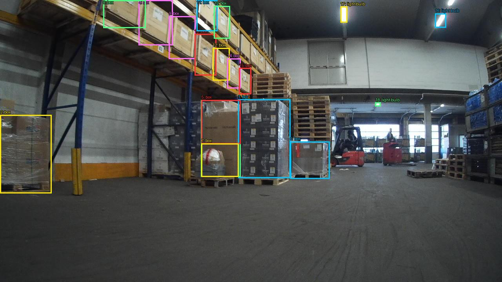
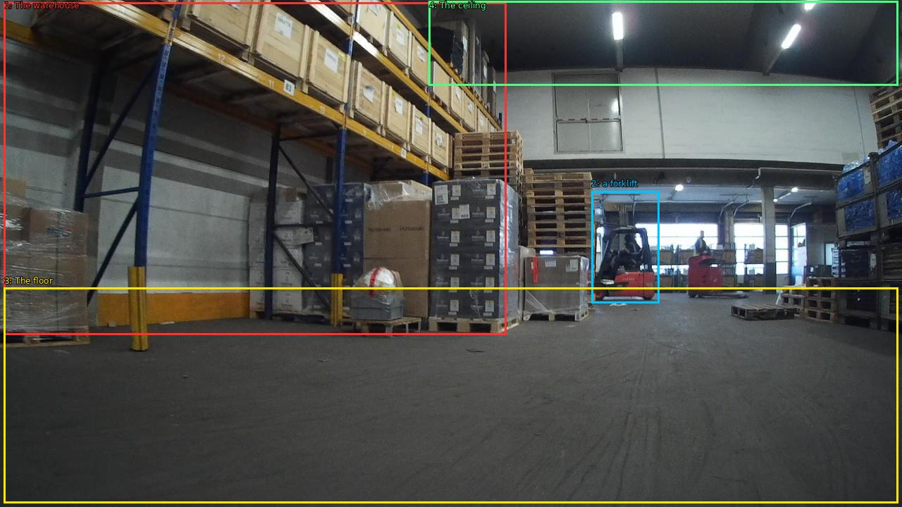

The image shows the interior of a large warehouse with a high ceiling and large windows. The warehouse is filled with stacks of cardboard boxes and pallets, and there is a forklift parked in the center of the room. The floor is made of concrete and the walls are painted white. The ceiling is high and has several fluorescent lights. The overall atmosphere of the warehouse is industrial and busy.


Original · Caption raw · Grounding raw · Koordinate
Številke so lokalni ID regije. Dolge slikovne oznake so skrajšane; spodaj so celotne fraze. Napovedane regije se lahko prekrivajo ali opisujejo skupine.
| ID | Celotna fraza | bbox xyxy |
|---|---|---|
| 1 | The warehouse | [5.759999752044678, 3.2400002479553223, 718.719970703125, 475.5600280761719] |
| 2 | a forklift | [839.0399780273438, 271.08001708984375, 935.0399780273438, 430.9200134277344] |
| 3 | The floor | [5.759999752044678, 408.6000061035156, 1274.239990234375, 714.6000366210938] |
| 4 | The ceiling | [608.6400146484375, 1.8000000715255737, 1274.239990234375, 121.32000732421875] |